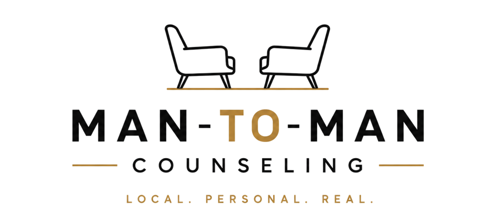

I am an experienced, effective professional treating a broad range of psychiatric issues and conditions. I primarily do Individual Counseling, Couples Counseling, and Group Counseling. I specialize in working with adult men, couples, and young adult males, but I also work well with women. When you begin counseling with me, you can expect a thoughtful, collaborative process focused on insight, self-understanding, and meaningful change.
Our work is grounded in the belief that lasting growth comes from understanding why you think, feel, and respond the way you do and not just managing symptoms. We will explore your life story, including formative relationships and experiences that have shaped your identity, patterns, and emotional responses. My approach is insight-oriented and informed by Psychodynamic principles and Solution-Focused Brief Therapy, with a strong emphasis on Person-Centered work. I also use gentle Socratic questioning and CBT-based strategies to help you identify and reframe unhelpful thought patterns when they are getting in your way.
Sessions are guided by what is most important to you. Each week, we’ll check-in on how you’re really doing; not just what happened, but how you’re feeling, coping, and applying insights from our work together. Rather than following a rigid agenda, we focus on the themes that naturally emerge, trusting that the most important issues will surface when given space. You won’t be overloaded with generic or busy-work homework. When between-session practices are suggested, they are purposeful, practical, and tailored to your goals. Much of the work happens through reflection, increased awareness, and learning to respond to yourself and others with greater clarity and intention.
At the core of my work is the belief that you already possess the wisdom needed to move forward. At times, that wisdom can be obscured by ego defenses, old survival strategies, or cognitive distortions. My role is to help you recognize and clear those obstacles so you can live more authentically and engage in healthier, more satisfying relationships.
Counseling with me is not about quick fixes. It is a process of understanding yourself more fully and creating sustainable change, one session at a time.
Addiction, Men's Issues, Late Teen Male Issues, Depression, Anxiety, Mood Disorders, Emerging Adults, Anger Management, Life Coping Skills, Relationship Issues, Substance Abuse & Addiction, Drug Abuse & Addiction, OCD, ADHD, Low Self-Esteem, Spirituality, Stress, and Other Mental Health Issues
Individual counseling begins with a thorough intake, clinical formulation, and individualized treatment plan. Sessions are typically held weekly and are tailored to the client’s goals, strengths, and challenges. Treatment is Person-Centered in nature and integrates evidence-based approaches such as Solution-Focused Brief Therapy, Psychodynamic Therapy, CBT, MI, DBT, and REBT.
The goal is to provide a safe, supportive, and structured space where clients can gain insight, build skills, and create lasting change in their lives.
Trained in the Following Couples Therapy Approaches:
Emotionally Focused Couple Therapy (EFCT)
An attachment-based, experiential approach that uses emotion as the primary vehicle for change. EFCT helps couples identify and de-escalate negative interaction cycles, access the deeper emotions and attachment needs underlying those patterns, and create new interactions that foster emotional responsiveness, security, and connection.
Imago Relationship Therapy
A relational approach that helps couples better understand how past experiences can shape present relationship patterns. Imago emphasizes empathy, intentional dialogue, and deeper understanding to help partners move from conflict and disconnection toward greater connection and relational healing.
Gottman Method Couples Therapy — Level 1 Training
A research-based approach that helps couples strengthen friendship and intimacy, improve communication, manage conflict more effectively, and build greater understanding and shared meaning within the relationship.
PREPARE/ENRICH — Certified Facilitator
A research-informed relationship assessment and skill-building program that helps couples identify relationship strengths, growth areas, and important patterns in areas such as communication, conflict, finances, intimacy, expectations, and personality differences.
Woodsfellow Love Cycles/Fear Cycles Model
A couples therapy framework that helps partners identify the recurring cycles that contribute to distress and disconnection. By understanding each partner’s underlying fears, emotional reactions, and behavioral responses, couples can interrupt negative patterns and develop healthier cycles of connection and responsiveness.
My Approach to Couples Therapy
My approach to couples therapy is integrative and tailored to the needs of each relationship. I draw from attachment-based, experiential, skills-focused, and research-informed approaches to help couples understand the patterns that keep them stuck, strengthen emotional connection, improve communication, and manage conflict more effectively.
Depending on the couple, I may incorporate Emotionally Focused Couple Therapy to identify and transform negative interaction cycles by accessing the underlying emotions and attachment needs that drive them; Imago Relationship Therapy to deepen understanding, empathy, and intentional communication; Gottman Method strategies to strengthen friendship, intimacy, and conflict-management skills; PREPARE/ENRICH to identify relationship strengths and growth areas; and the Woodsfellow Love Cycles/Fear Cycles model to help couples recognize and change the recurring patterns that contribute to disconnection.
Rather than relying on a single method, I integrate these approaches to help couples create greater emotional safety, stronger connection, healthier communication, and lasting change.

Man-To-Man Counseling is focused primarily on helping men deal with the real-life problems that can leave them feeling stressed, stuck, overwhelmed, disconnected, unhappy, or unsure of what to do next. I work with men struggling with anxiety, depression, anger, ADHD, relationship problems, stress, major life changes, low self-esteem, perfectionism, and questions about purpose or direction.
My style is practical, straightforward, and collaborative. I use a combination of Person-Centered Therapy, Cognitive Behavioral Therapy, and Solution-Focused approaches to help men understand what is happening and what patterns are getting in the way. Men can then make the changes that actually improve their lives. The goal is to understand what is going on, figure out what needs to change, and develop a realistic path forward.
Common Questions From Men
A lot of men come to counseling because something is not working in their relationships. Maybe your wife or partner says you are emotionally unavailable. Maybe you are arguing more, growing apart, or losing patience with your kids. You may be thinking you work hard, provide for your family and do everything you are supposed to do but it's still not enough. And those things do matter, but the people closest to you also need to feel connected to you. Sometimes men get so focused on providing, solving problems, and taking care of responsibilities that family life starts to feel more like managing a household than sharing a life.
Counseling can help you recognize the patterns that create distance, such as becoming defensive, shutting down, losing your temper, avoiding difficult conversations, or trying to fix something when your partner really wants you to listen. The goal is not to become a perfect husband or father. It is to become more aware of how you show up, communicate more clearly, and get better at repairing things when they go wrong. The people you love do not need perfection. They need your presence.
You may snap at your partner, lose patience with your kids, or get unusually irritated by things that normally should not bother you that much. Then later you wonder why you got so upset about it.
One thing I have learned from working with men is that anger is often the emotion we notice first, but it is not always where the problem started. Underneath it may be stress, anxiety, hurt, exhaustion, rejection, fear, or feeling criticized or unappreciated. There are a host of reasons that need to be addressed that could go back as far as childhood.
I think of anger like a warning light on a dashboard. The light tells you something needs attention, but it does not necessarily tell you what the problem is. Counseling helps you slow things down and figure out what is actually triggering the reaction. The goal is not to eliminate anger. Anger is normal. The goal is to understand it well enough that you remain in control of what happens next.
Your partner may say she never knows what you're feeling, doesn't feel connected, or feels like you “check-out" sometimes. From your perspective, you may simply be trying to keep things from getting worse. Maybe you do not know what to say. Maybe every conversation seems to turn into an argument. Eventually, staying quiet or walking away feels safer.
The problem is that what feels safe to you may feel like rejection to your partner. This often creates a cycle where one person pushes harder to talk while the other becomes overwhelmed and pulls further away.
You do not have to choose between fighting and shutting down. Counseling can help you understand what happens inside you during conflict and learn how to stay engaged without feeling like you have to defend yourself, fix everything, or come up with the perfect response. Sometimes progress is simply being able to say, “I’m getting overwhelmed. Give me 20 minutes, and then let’s come back to this.” You do not need to change your personality. You just need a better way to stay connected when things get difficult.
A lot of men have very little interest in “talking about feelings.” I understand that. If you have a problem, you probably want to solve it. The reason emotions matter is that they give you information.
Anger may tell you something feels unfair. Anxiety tells you something feels threatening. Resentment may mean you have been saying yes when you want to say no. Sadness tells you that something important has been lost. When you ignore those signals, they usually do not disappear. They tend to show up somewhere else as irritability, withdrawal, overworking, drinking, relationship problems, or simply feeling unhappy.
You cannot fix a problem you do not understand. Talking about emotions is not about becoming more emotional. It is about becoming more self-aware. And when you understand yourself better, you have more choices about what you do next.
From the outside, your life may look fine. You have a career, responsibilities, maybe a family, and you have checked many of the boxes you thought would make life satisfying. But something still feels off. You may feel restless, burned out, disconnected, or like you are simply going through the motions.
Many men spend years focused on work, responsibility, and taking care of other people. Somewhere along the way, they stop asking themselves, “Am I actually living the life I want, or am I just fulfilling my obligations?”
Feeling stuck can come from burnout, fear of change, perfectionism, anxiety, unresolved issues, people-pleasing, or simply losing touch with what matters to you. Counseling can help you sort through that. My goal is not to tell you what your life should look like. It is to help you understand where you are, decide where you want to go, and develop practical steps for getting there. You do not have to blow up your life to change it. Sometimes a few intentional changes can make a very big difference.
Group counseling provides a structured, therapist-led environment where individuals can develop insight, skills, and accountability alongside others facing similar challenges. Groups are intentionally designed to balance psychoeducation, interpersonal process, and practical skill-building. Participants benefit not only from professional guidance, but also from shared experience, feedback, and normalization that occurs within the group setting. Group counseling is particularly effective for addressing issues such as emotional regulation, relationships, stress, anger, and personal growth. The group format fosters connection, perspective-taking, and real-world application of therapeutic skills, helping participants move from insight to meaningful, sustainable change.
We proudly accept the following insurance company plans and their subsidiaries:
If you don't have insurance or have a high deductible that is not met, you will pay the private pay rate and be given a Super Bill that you can file with your insurance and potentially get reimbursed at the rate of your out-of-network benefits. This benefit, combined with reduced rate (if qualified), is often the same or close to the same as some people's co-pays.
We offer a sliding scale for clients who can demonstrate financial need.
Payments are processed through Headway and Grow Therapy respectively.
We are conveniently located on Hwy 92 just east of 575!
INSIGHTS COUNSELING SERVICES, LLC.
210 Creekstone Ridge
Woodstock, GA 30188
Office Inside Tranquility Counseling Suite
Dan Mulloy, LPC, CAMS-II
Licensed Professional Counselor
770-883-6988
dan@danmulloyLPC.com